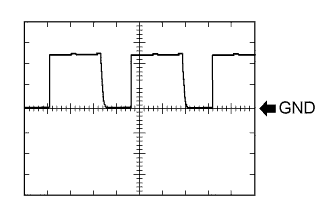

ENGINE IMMOBILISER SYSTEM > TERMINALS OF ECU |
| CHECK ENGINE SWITCH |
Measure the resistance and voltage according to the value(s) in the table below.
| Terminal No. (Symbol) | Input/Output | Wiring Color | Terminal Description | Condition | Specified Condition | Related Data List Item/DTC |
| G24-8 (AGND) - Body ground | - | GR - Body ground | Ground | Always | Below 1 Ω | - |
| G24-9 (TXCT) - G24-8 (AGND) | Input | W - GR | Immobiliser communication input | Engine switch off, brake pedal not depressed, 30 seconds or more after driver door opened and then closed | Below 1 V | - |
| G24-10 (CODE) - G24-8 (AGND) | Output | V - GR | Immobiliser communication output | Engine switch off, brake pedal not depressed, 30 seconds or more after driver door opened and then closed | Below 1 V | - |
| G24-14 (VC5) - G24-8 (AGND) | Input | P - GR | Transponder key amplifier power supply | Engine switch off, brake pedal not depressed, 30 seconds or more after driver door opened and then closed | Below 1 V | - |
| Terminal No. (Symbol) | Input/Output | Wiring Color | Terminal Description | Condition | Specified Condition | Related Data List Item/DTC |
| G24-9 (TXCT) - G24-8 (AGND) | Input | W - GR | Signal input from certification ECU (Code sent from certification ECU to transponder key amplifier built into engine switch, and then transmitted by antenna of transponder key amplifier as electric waves) | After engine switch turned off, within 30 seconds of any door opened and closed, or brake pedal depressed | Pulse generation (See waveform 1) |
|
| G24-10 (CODE) - G24-8 (AGND) | Output | V - GR | Signal output to certification ECU (Electric waves from transponder key amplifier built into engine switch used to detect key information. Information then sent to certification ECU) | After engine switch turned off, within 30 seconds of any door opened and closed, or brake pedal depressed, and then key held against engine switch* | Pulse generation (See waveform 2) | |
| G24-14 (VC5) - G24-8 (AGND) | Input | P - GR | Transponder key amplifier power supply (Power supplied from certification ECU when transponder key amplifier built into engine switch activated) | After engine switch turned off, within 30 seconds of any door opened and closed, or brake pedal depressed | Pulse generation (See waveform 3) |
Inspect using an oscilloscope.
Waveform 1 (Reference)
| Item | Content |
| Tester Connection | G24-9 (TXCT) - G24-8 (AGND) |
| Tool Setting | 2 V/DIV., 20 ms./DIV. |
| Condition | After engine switch turned off, within 30 seconds of any door opened and closed, or brake pedal depressed |
Waveform 2 (Reference)
| *a | Key held against engine switch |
| Item | Content |
| Tester Connection | G24-10 (CODE) - G24-8 (AGND) |
| Tool Setting | 1 V/DIV., 200 ms./DIV. |
| Condition | After engine switch turned off, within 30 seconds of any door opened and closed, or brake pedal depressed, and then key held against engine switch* |
|  |
Waveform 3 (Reference)
| Item | Content |
| Tester Connection | G24-14 (VC5) - G24-8 (AGND) |
| Tool Setting | 2 V/DIV., 200 ms./DIV. |
| Condition | After engine switch turned off, within 30 seconds of any door opened and closed, or brake pedal depressed |
| CHECK CERTIFICATION ECU |

Disconnect the G26 ECU connector.
Measure the resistance and voltage according to the value(s) in the table below.
| Terminal No. (Symbol) | Input/Output | Wiring Color | Terminal Description | Condition | Specified Condition | Related Data List Item/DTC |
| G26-1 (+B) - G26-15 (E) | Input | V - W-B | +B power supply | Always | 11 to 14 V | - |
| G26-17 (CUTB) - G26-15 (E) | Input | L - W-B | Dark current cut pin* | Always | 11 to 14 V | - |
| G26-15 (E) - Body ground | - | W-B - Body ground | Ground | Always | Below 1 Ω | - |
Reconnect the G26 ECU connector.
Measure the resistance and voltage according to the value(s) in the table below.
| Terminal No. (Symbol) | Input/Output | Wiring Color | Terminal Description | Condition | Specified Condition | Related Data List Item/DTC |
| G26-2 (IND) - G26-15 (E) | Output | G - W-B | Security indicator output | Engine switch off → on (IG) | Pulse generation → Below 2 V | - |
| G26-12 (TXCT) - G26-36 (AGND) | Output | W - GR | Signal output to transponder key amplifier | Engine switch off, brake pedal not depressed, 30 seconds or more after driver door opened and then closed | Below 1 V |
|
| G26-13 (CODE) - G26-36 (AGND) | Input | V - GR | Signal input from transponder key amplifier | Engine switch off, brake pedal not depressed, 30 seconds or more after driver door opened and then closed | Below 1 V | |
| G26-16 (IG) - G26-15 (E) | Input | W - W-B | Ignition power supply | Engine switch off → on (IG) | Below 1 V → 11 to 14 V | Ignition Switch |
| G26-28 (VC5) - G26-36 (AGND) | Output | P - GR | Transponder key amplifier power supply | Engine switch off, brake pedal not depressed, 30 seconds or more after driver door opened and then closed | Below 1 V |
|
| G26-36 (AGND) - Body ground | - | GR - Body ground | Transponder key amplifier ground | Always | Below 1 Ω |
| Terminal No. (Symbol) | Input/Output | Wiring Color | Terminal Description | Condition | Specified Condition | Related Data List Item/DTC |
| G26-12 (TXCT) - G26-36 (AGND) | Output | W - GR | Signal output to transponder key amplifier (Code sent from certification ECU to transponder key amplifier built into engine switch, and then transmitted by antenna of transponder key amplifier as electric waves) | After engine switch turned off, within 30 seconds of any door opened and closed, or brake pedal depressed | Pulse generation (See waveform 1) |
|
| G26-13 (CODE) - G26-36 (AGND) | Input | V - GR | Signal input from transponder key amplifier (Electric waves from transponder key amplifier built into engine switch used to detect key information. Information then sent to certification ECU) | After engine switch turned off, within 30 seconds of any door opened and closed, or brake pedal depressed, and then key held against engine switch* | Pulse generation (See waveform 2) | |
| G26-28 (VC5) - G26-36 (AGND) | Output | P - GR | Transponder key amplifier power supply (Power supplied from certification ECU when transponder key amplifier built into engine switch activated) | After engine switch turned off, within 30 seconds of any door opened and closed, or brake pedal depressed | Pulse generation (See waveform 3) |
Inspect using an oscilloscope.
Waveform 1 (Reference)
| Item | Content |
| Tester Connection | G26-12 (TXCT) - G26-36 (AGND) |
| Tool Setting | 2 V/DIV., 20 ms./DIV. |
| Condition | After engine switch turned off, within 30 seconds of any door opened and closed, or brake pedal depressed |
Waveform 2 (Reference)
| *a | Key held against engine switch |
| Item | Content |
| Tester Connection | G26-13 (CODE) - G26-36 (AGND) |
| Tool Setting | 1 V/DIV., 200 ms./DIV. |
| Condition | After engine switch turned off, within 30 seconds of any door opened and closed, or brake pedal depressed, and then key held against engine switch* |
Waveform 3 (Reference)
| Item | Content |
| Tester Connection | G26-28 (VC5) - G26-36 (AGND) |
| Tool Setting | 2 V/DIV., 200 ms./DIV. |
| Condition | After engine switch turned off, within 30 seconds of any door opened and closed, or brake pedal depressed |
| CHECK ID CODE BOX |
Disconnect the G25 box connector.
Measure the resistance and voltage according to the value(s) in the table below.
| Terminal No. (Symbol) | Input/Output | Wiring Color | Terminal Description | Condition | Specified Condition | Related Data List Item/DTC |
| G25-1 (+B) - G25-8 (GND) | Input | V - W-B | +B power supply | Always | 11 to 14 V | B2789 |
| G25-8 (GND) - Body ground | - | W-B - Body ground | Ground | Always | Below 1 Ω | B2789 |
Reconnect the G25 box connector.
Measure the voltage according to the value(s) in the table below.
| Terminal No. (Symbol) | Input/Output | Wiring Color | Terminal Description | Condition | Specified Condition | Related Data List Item/DTC |
| G25-5 (EFII) - G25-8 (GND) | Input | SB - W-B | EFI communication input (Signal input from ECM to ID code box) | Engine switch off | 11 to 14 V |
|
| G25-5 (EFII) - G25-8 (GND) | Input | SB - W-B | EFI communication input (Signal input from ECM to ID code box) | Within 3 seconds of engine start or within 3 seconds of engine switch turned on (IG) after battery cable disconnected and reconnected | Pulse generation (See waveform 1) | |
| G25-6 (EFIO) - G25-8 (GND) | Output | W - W-B | EFI communication output (Signal output from ID code box to ECM) | Engine switch off | 11 to 14 V | |
| G25-6 (EFIO) - G25-8 (GND) | Output | W - W-B | EFI communication output (Signal output from ID code box to ECM) | Engine switch on (IG) | Pulse generation (See waveform 2) |
Inspect using an oscilloscope.
Waveform 1 (Reference)
| *a | Approximately 160 ms | *b | Approximately 510 ms |
| Item | Content |
| Tester Connection | G25-5 (EFII) - G25-8 (GND) |
| Tool Setting | 2 V/DIV., 200 ms./DIV. |
| Condition | Within 3 seconds of engine start or within 3 seconds of engine switch turned on (IG) after battery cable disconnected and reconnected |
Waveform 2 (Reference)
| *a | Approximately 160 ms | *b | Approximately 510 ms |
| Item | Content |
| Tester Connection | G25-6 (EFIO) - G25-8 (GND) |
| Tool Setting | 2 V/DIV., 200 ms./DIV. |
| Condition | Engine switch on (IG) |
| CHECK STEERING LOCK ACTUATOR ASSEMBLY (STEERING LOCK ECU) |
Measure the voltage and resistance according to the value(s) in the table below.
| Terminal No. (Symbol) | Input/Output | Wiring Color | Terminal Description | Condition | Specified Condition | Related Data List Item/DTC |
| G23-1 (GND) - Body ground | - | W-B - Body ground | Ground | Always | Below 1 Ω | - |
| G23-3 (IGE) - Body ground | Input | W - Body ground | Steering lock motor operation permission signal (motor operation permission signal supplied by power management control ECU) | Steering lock motor operates when both conditions met, and then door opened:
| Pulse generation (See waveform 1) |
|
| G23-4 (SLP1) - Body ground | Output | SB - Body ground | Steering lock bar position signal (signal output from steering unlock sensor) | Steering locked → unlocked*1 | 10 to 14 V → Below 1.2 V |
|
| G23-6 (IG2) - Body ground | Input | W - Body ground | IG signal (IG2 power supply input for steering lock motor) | Engine switch off → on (IG) | Below 1 V → 11 to 14 V |
|
| G23-7 (B) - Body ground | Output | G - Body ground | Constant power supply | Always | 11 to 14 V | B2788*2 |
Inspect using an oscilloscope.
Waveform 1 (Reference)
| *a | Steering lock motor not operating |
| *b | Steering lock motor operating |
| Item | Content |
| Tester Connection | G23-3 (IGE) - Body ground |
| Tool Setting | 2 V/DIV., 20 ms./DIV. |
| Condition | Steering lock motor not operating*a ←→ operating*b |
| CHECK ECM |
Measure the voltage according to the value(s) in the table below.
| Terminal No. (Symbol) | Input/Output | Wiring Color | Terminal Description | Condition | Specified Condition | Related Data List Item/DTC |
| C30-12 (E1) - Body ground | - | BR - Body ground | Ground | Always | Below 1 Ω | - |
| G44-24 (BATT) - C30-12 (E1) | Input | L - BR | +B power supply | Always | 11 to 14 V | - |
| G44-23 (+B2) - C30-12 (E1) | Input | W - BR | +B power supply | Engine switch on (IG) | 11 to 14 V | - |
| G44-22 (+B) - C30-12 (E1) | Input | W - BR | +B power supply | Engine switch on (IG) | 11 to 14 V | - |
| G45-20 (IMO) - C30-12 (E1) | Input | SB - BR | Communication input from ID code box | Engine switch off | 11 to 14 V | - |
| G45-20 (IMO) - C30-12 (E1) | Input | SB - BR | Communication input from ID code box | Within 3 seconds of engine start or within 3 seconds of engine switch turned on (IG) after battery cable disconnected and reconnected | Pulse generation (See waveform 1) | - |
| G45-14 (IMI) - C30-12 (E1) | Output | W - BR | Communication output to ID code box | Engine switch off | 11 to 14 V | - |
| G45-14 (IMI) - C30-12 (E1) | Output | W - BR | Communication output to ID code box | Engine switch on (IG) | Pulse generation (See waveform 2) | - |
Inspect using an oscilloscope.
Waveform 1 (Reference)
| *a | Approximately 160 ms | *b | Approximately 510 ms |
| Item | Content |
| Tester Connection | G45-20 (IMO) - C30-12 (E1) |
| Tool Setting | 2 V/DIV., 200 ms./DIV. |
| Condition | Within 3 seconds of engine start or within 3 seconds of engine switch turned on (IG) after battery cable disconnected and reconnected |
Waveform 2 (Reference)
| *a | Approximately 160 ms | *b | Approximately 510 ms |
| Item | Content |
| Tester Connection | G45-14 (IMI) - C30-12 (E1) |
| Tool Setting | 2 V/DIV., 200 ms./DIV. |
| Condition | Engine switch on (IG) |